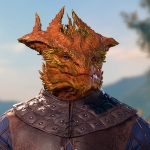

Character Profiles
Below is some info about each of the four choices for your character in The Dragon's Dungeon.
Gwyndolin Dragonfang
Human
PSI Warrior Fighter
Gwyndolin was raised by a former knight who decided to live out his retirement as a hermit. He taught her how to use a sword. After he passed on due to natural causes, Gwyndolin set out to see the world, which led her to meet the rest of the party when they were attacked by goblins on the road.
- Strength: 18 (+4)
- Dexterity: 9 (-1)
- Constitution: 14 (+2)
- Intelligence: 16 (+3)
- Wisdom: 14 (+2)
- Charisma: 10 (+0)

Iarath Armash
Topaz Dragonborn
Arcane Trickster Rogue
Iarath grew up in the city. His family never had much, so he believed that he needed to steal in order to survive. One day, however, he was caught stealing from a wizard. Rather than turn him over, the wizard instead fed Iarath and taught him magic, making him promise to use his new abilities to help others rather than himself.
- Strength: 8 (-1)
- Dexterity: 20 (+5)
- Constitution: 14 (+2)
- Intelligence: 16 (+3)
- Wisdom: 10 (+0)
- Charisma: 13 (+1)
Sabtha Hunzrar
Drow
Illusionist Wizard
Sabtha was a member of the Drow nobility in the Underdark. She spent her days reading and learning magic. She was so sheltered in her youth, however, that she knew very little of what Drow society was like. She learned the harsh reality of Drow society the hard way when her husband was executed for a crime he didn't commit without receiving a fair trial. Afterwards, she left the Underdark, vowing to never return.
- Strength: 8 (-1)
- Dexterity: 14 (+2)
- Constitution: 16 (+3)
- Intelligence: 18 (+4)
- Wisdom: 12 (+1)
- Charisma: 11 (+0)
Darkahm Strongkin
Dwarf
Light Domain Cleric
Darkahm lived his entire life underground, playing the lute and hoping to receive enough money to afford his next meal. One day, an acolyte of Milil heard Darkahm's music and offered him a place at the temple. Darkahm accepted the offer and became a cleric. As a cleric, he traveled across the land, helping people. Eventually, he met the group he would come to consider his closest friends.
- Strength: 14 (+2)
- Dexterity: 13 (+1)
- Constitution: 10 (+0)
- Intelligence: 8 (-1)
- Wisdom: 18 (+4)
- Charisma: 16 (+3)